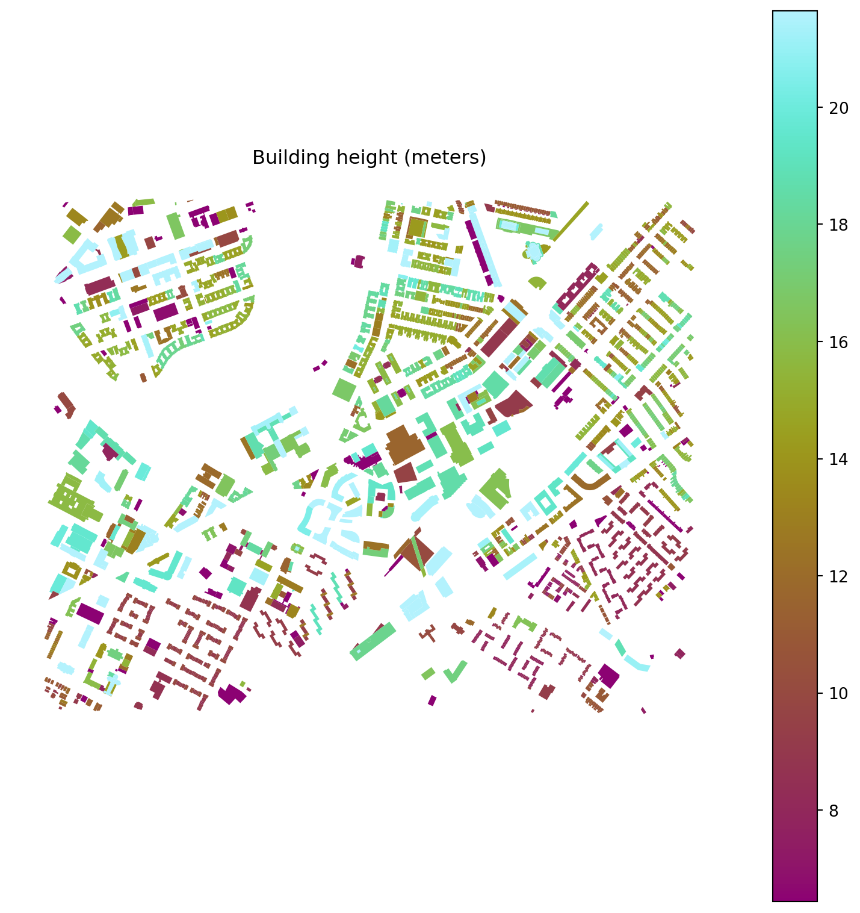
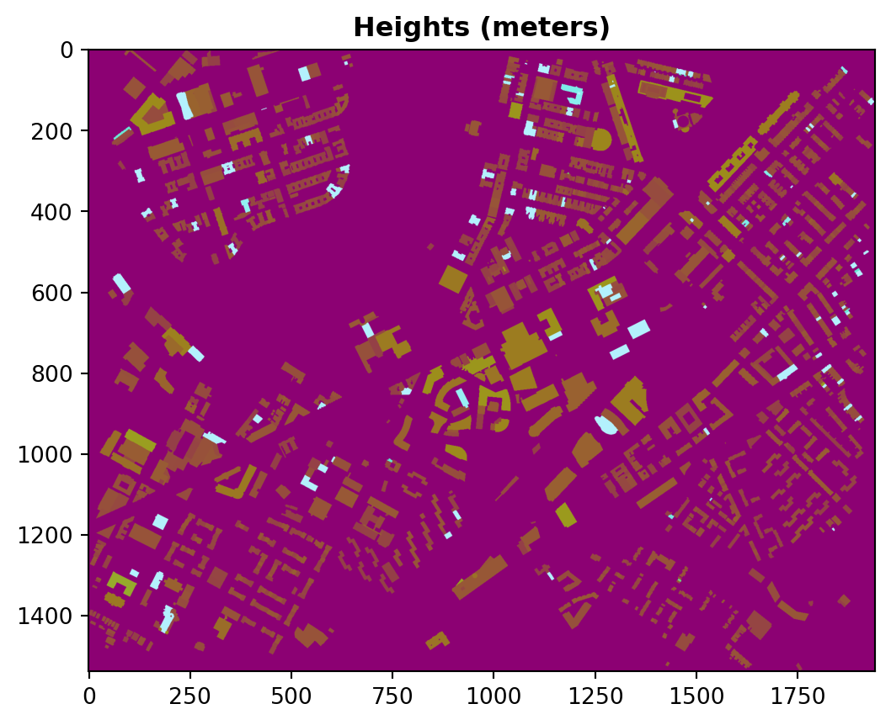
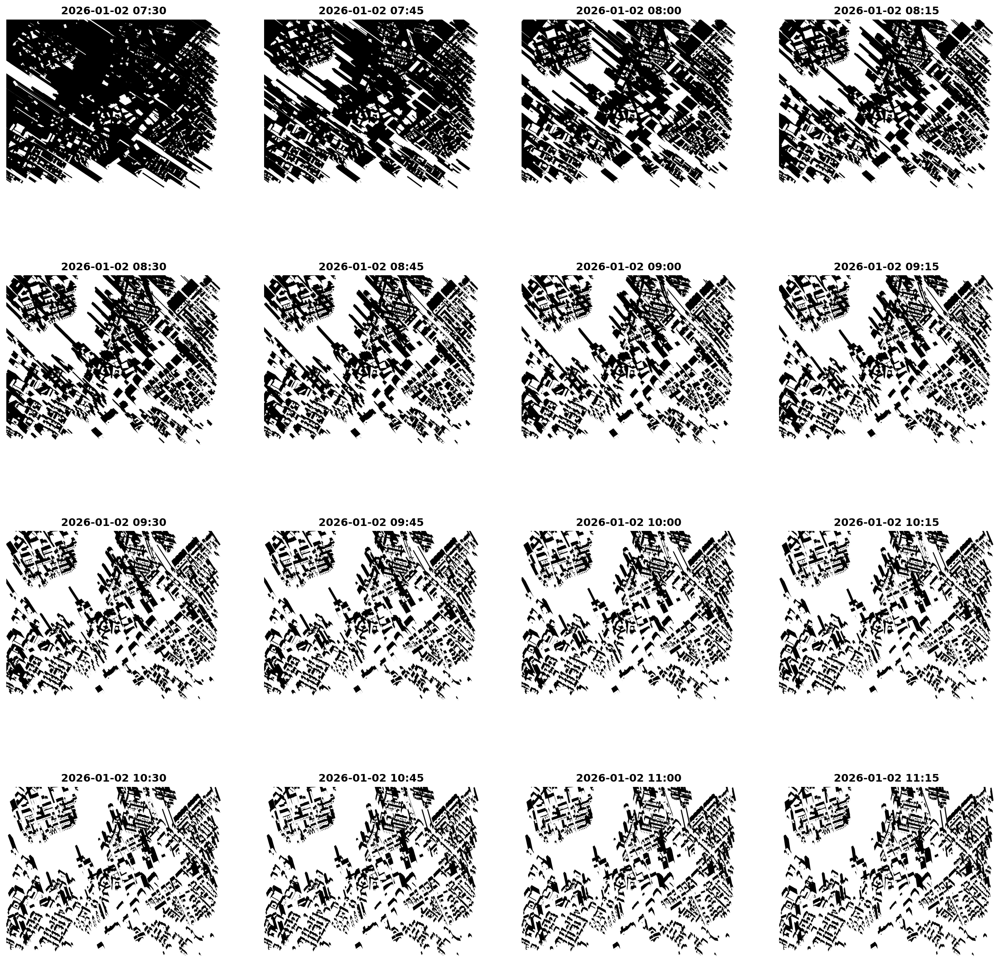
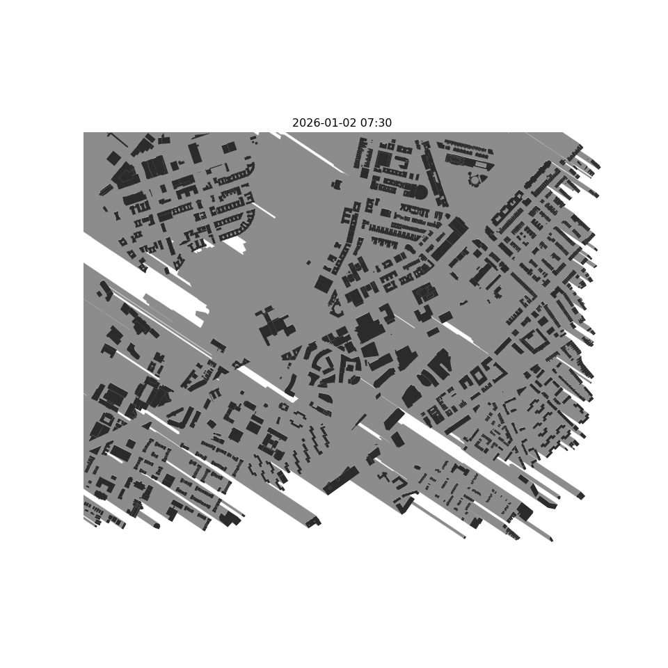

import geopandas as gpd
import matplotlib.pyplot as plt
import cmcrameri.cm as cmc
import numpy as np
import pvlib
from umep.util.shadowingfunctions import shadowingfunctionglobalradiation
import pandas as pd
from rasterio.features import rasterize
from rasterio.transform import from_origin
from rasterio.plot import showShadow UMEP tests
In this notebook I implement shadow calculations on one of the 3D geojson models that we generated for the Northeastern area. The algorithm I use is the one provided in the UMEP repo, which is part of a QGIS plugin. It is based on an geometrical calculation described by Carlo Ratti in a paper called: Image Processing for Urban Scale Environmental Modelling.
Opening the data
LOD_1_FILE_PATH = "/Users/legariapena.j/Documents/open-sensing-analysis/open-sensing-analysis/notebooks/2026_11_04_shadow_umep_tests/data/building_attributes.geojson"
gdf = gpd.read_file(LOD_1_FILE_PATH)
FEET_TO_METERS = 0.3048
gdf["reference_height"] = gdf["reference_height"] * FEET_TO_METERS
#Clip the heights.
PERCENTILE_MIN = 5
PERCENTILE_MAX = 95
all_heights = list(gdf["reference_height"])
min_percentile_value = np.nanpercentile(all_heights, PERCENTILE_MIN)
max_percentile_value = np.nanpercentile(all_heights, PERCENTILE_MAX)
print(min_percentile_value)
print(max_percentile_value)
ATTRIBUTE_TO_SHOW = "reference_height_clipped"
gdf[ATTRIBUTE_TO_SHOW] = gdf["reference_height"].clip(min_percentile_value, max_percentile_value)
fig, ax = plt.subplots(1,1, figsize = (10, 10))
gdf.plot(ax = ax, cmap = cmc.hawaii, column = ATTRIBUTE_TO_SHOW, legend = True)
ax.set_axis_off()
ax.set_title("Building height (meters)")
gdf.head()6.4398296409144
21.640800000000002| unprojected_area | projected_area | longitude_difference | latitude_difference | n_vertices | shape_length | complexity | inverse_average_segment_length | vertices_per_area | average_complexity_per_segment | ... | material_pct_sky | material_area_sky | material_pct_water | material_area_water | material_pct_wood | material_area_wood | object_id | reference_height | geometry | reference_height_clipped | |
|---|---|---|---|---|---|---|---|---|---|---|---|---|---|---|---|---|---|---|---|---|---|
| 0 | 2.606018e-08 | 436.931802 | 0.000307 | 0.000147 | 18 | 0.000836 | 32088.166360 | 21525.350130 | 6.907090e+08 | 1782.675909 | ... | 0.197964 | 41.492197 | 0.0 | 0.0 | 0.000000 | 0.000000 | 422 | 4.149852 | POLYGON ((-71.09827 42.34483, -71.09841 42.344... | 6.439830 |
| 1 | 7.536398e-08 | 1263.588565 | 0.000493 | 0.000338 | 12 | 0.001201 | 15939.663733 | 9989.373203 | 1.592272e+08 | 1328.305311 | ... | 0.527029 | 225.558589 | 0.0 | 0.0 | 0.000000 | 0.000000 | 423 | 12.621768 | POLYGON ((-71.09979 42.34566, -71.09993 42.345... | 12.621768 |
| 2 | 4.282650e-08 | 718.039285 | 0.000385 | 0.000180 | 33 | 0.001082 | 25260.208901 | 30504.534646 | 7.705509e+08 | 765.460876 | ... | 0.095425 | 38.266690 | 0.0 | 0.0 | 0.000481 | 0.192871 | 424 | 14.932152 | POLYGON ((-71.08957 42.34476, -71.08957 42.344... | 14.932152 |
| 3 | 9.175381e-08 | 1538.353542 | 0.000388 | 0.000354 | 32 | 0.001415 | 15424.510992 | 22610.724030 | 3.487594e+08 | 482.015969 | ... | 0.255217 | 154.485817 | 0.0 | 0.0 | 0.010295 | 6.231924 | 425 | 7.424928 | POLYGON ((-71.0912 42.34432, -71.09126 42.3443... | 7.424928 |
| 4 | 1.952804e-08 | 327.409074 | 0.000161 | 0.000181 | 4 | 0.000571 | 29247.594098 | 7003.436871 | 2.048337e+08 | 7311.898524 | ... | 0.129727 | 35.769443 | 0.0 | 0.0 | 0.000913 | 0.251765 | 426 | 5.084064 | POLYGON ((-71.09138 42.34423, -71.09149 42.344... | 6.439830 |
5 rows × 84 columns

Rasterize the file
So far we have a vector file. We now need to rasterize it.
buildings = gdf.to_crs(32619)
buildings = buildings[buildings["building_height"] > 0].sort_values("building_height")
PIXEL_SIZE = 1.0
minx, miny, maxx, maxy = buildings.total_bounds
width = int(np.ceil((maxx - minx) / PIXEL_SIZE))
height = int(np.ceil((maxy - miny) / PIXEL_SIZE))
transform = from_origin(minx, maxy, PIXEL_SIZE, PIXEL_SIZE)
dsm = rasterize(
zip(buildings.geometry, buildings["building_height"]),
out_shape = (height, width),
transform = transform,
fill = 0.0,
dtype = "float32",
)
min_percentile_value = np.nanpercentile(buildings["building_height"], PERCENTILE_MIN)
max_percentile_value = np.nanpercentile(buildings["building_height"], PERCENTILE_MAX)
dsm_to_show = dsm.copy()
dsm_to_show[dsm_to_show[:,:] >= max_percentile_value] = max_percentile_value
dsm_to_show[(dsm_to_show[:,:] <= min_percentile_value) & (dsm_to_show[:,:] > 0)] = min_percentile_value
show(dsm_to_show, cmap = cmc.hawaii, title = "Heights (meters)")
Apply the shadow calculation for multiple hours of today.
times = pd.date_range("2026-01-02 06:00", "2026-01-02 18:00", freq = "15min", tz = "America/New_York")
solar_position = pvlib.solarposition.get_solarposition(times, 42.339, -71.089)
solar_position = solar_position[solar_position["apparent_elevation"] > 0]
ALL_DATES = list(solar_position.index.strftime("%Y-%m-%d %H:%M"))
azimuth_values = list(solar_position["azimuth"])
altitude_values = list(solar_position["apparent_elevation"])
shadows = [shadowingfunctionglobalradiation(dsm, azimuth, altitude, 1 / PIXEL_SIZE, 1) for azimuth, altitude in zip(azimuth_values, altitude_values)]
shadows[0]array([[0., 0., 0., ..., 1., 1., 1.],
[0., 0., 0., ..., 1., 1., 1.],
[0., 0., 0., ..., 1., 1., 1.],
...,
[1., 1., 1., ..., 1., 1., 1.],
[1., 1., 1., ..., 1., 1., 1.],
[1., 1., 1., ..., 1., 1., 1.]], shape=(1538, 1943))fig, axes = plt.subplots(4, 4, figsize = (20, 20))
for ax, shadow, date in zip(axes.flat, shadows, ALL_DATES):
show(shadow, ax = ax, transform = transform, cmap = "gray", vmin = 0, vmax = 1, adjust = False, title = date)
for ax in axes.flat:
ax.set_axis_off()
Generating an animation.
from matplotlib import animation
from matplotlib.colors import ListedColormap
from rasterio.plot import plotting_extent
from IPython.display import Markdown
fig, ax = plt.subplots(1, 1, figsize = (10, 10))
image = ax.imshow(shadows[0], cmap = ListedColormap(["#8c8c8c", "white"]), vmin = 0, vmax = 1, extent = plotting_extent(dsm, transform))
buildings.plot(ax = ax, color = "#2b2b2b")
ax.set_axis_off()
def update(i):
image.set_data(shadows[i])
ax.set_title(ALL_DATES[i])
return [image]
anim = animation.FuncAnimation(fig, update, frames = len(shadows), interval = 200)
anim.save("shadow_animation.gif", writer = "pillow", fps = 5)
plt.close(fig)
Markdown("")